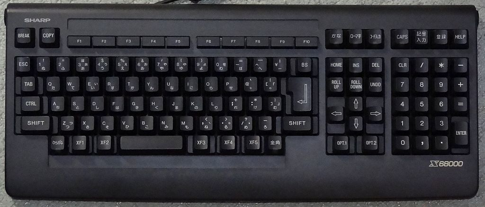

Sharp - X68000 (PX68k)¶
Background¶
The X68000 (エックスろくまんはっせん Ekkusu Rokuman Hassen) is a home computer created by Sharp, first released in March, 1987, sold only in Japan. The X68000 to SUPER models had a Hitachi HD68HC000 CPU at 10 MHz. The XVI to Compact models had a Motorola 68000 at 16 MHz. The X68030 has a Motorola MC68EC030 CPU at 25 MHz. They had 1-4MB of RAM and 1MB of VRAM. It had a Sharp-Hudson Custom Chipset as its GPU. This libretro branch was forked, starting on May 3, 2017, from hissorii's old build (Last updated on August 2014), backported 'c68k' core from kenyahiro's 'px68k' branch (fork of hissorii's 'px68k' branch using recent c68k yabause core to support X64 build). The Pandora version (An open-source handheld PC) by ptitSeb was forked from hissorii's 'px68k' branch and encapsulates the latest code from px68k-libretro (A spin-off of hissorii's branch).
Author/License¶
The PX68k core has been authored by
- hissorii
- kenyahiro
The PX68k core is licensed under
A summary of the licenses behind RetroArch and its cores can be found here.
Extensions¶
Content that can be loaded by the PX68k core have the following file extensions:
- .dim
- .img
- .d88
- .88d
- .hdm
- .dup
- .2hd
- .xdf
- .hdf
- .cmd
- .m3u
IMPORTANT NOTICE BEFORE YOU START PLAYING:
Saves are directly written to the disks being used. It is recommended to make sure to have a backup of roms before using them. This will make it easier to restore the original files incase the roms get corrupted.
Databases¶
RetroArch database(s) that are associated with the PX68k core:
BIOS¶
Required or optional firmware files go in the frontend's system directory.
Attention
The firmware files need to be in a directory named 'keropi' in RetroArch's system directory.
| Filename | Description | md5sum |
|---|---|---|
| keropi/iplrom.dat | X68000 BIOS - Required | 7fd4caabac1d9169e289f0f7bbf71d8e |
| keropi/cgrom.dat | Font file - Required | cb0a5cfcf7247a7eab74bb2716260269 |
| keropi/iplrom30.dat | X68000 BIOS 2 - Optional | |
| keropi/iplromco.dat | X68000 BIOS 3 - Optional | |
| keropi/iplromxv.dat | X68000 BIOS 4 - Optional |
Features¶
Frontend-level settings or features that the PX68k core respects.
| Feature | Supported |
|---|---|
| Restart | ✔ |
| Screenshots | ✔ |
| Saves | ✕ |
| States | ✕ |
| Rewind | ✕ |
| Netplay | ✕ |
| Core Options | ✔ |
| Memory Monitoring (achievements) | ✕ |
| RetroArch Cheats | ✕ |
| Native Cheats | ✕ |
| Controls | ✔ |
| Remapping | ✔ |
| Multi-Mouse | ✕ |
| Rumble | ✕ |
| Sensors | ✕ |
| Camera | ✕ |
| Location | ✕ |
| Subsystem | ✕ |
| Softpatching | ✕ |
| Disk Control | ✔ |
| Username | ✕ |
| Language | ✕ |
| Crop Overscan | ✕ |
| LEDs | ✕ |
Directories¶
The PX68k core's library name is 'PX68K'
The PX68k core saves/loads to/from these directories.
Frontend's System directory
| File | Description |
|---|---|
| keropi/config | Config |
| keropi/sram.dat | SRAM |
NOTE:
If your game suddenly does not boot up, try deleting
Geometry and timing¶
- The PX68k core's core provided FPS is
55.45or59.94. - The PX68k core's core provided sample rate is
44100Hz. - The PX68k core's base width is
800. - The PX68k core's base height is
600. - The PX68k core's max width is
800. - The PX68k core's max height is
600. - The PX68k core's core provided aspect ratio is
4/3
Usage¶
You can launch px68k to run a supported game. You can also use px68k without any content by using Load Core and then Run Core. This will directly bring you to the px68k menu.
L2 button or F12 key brings up the original px68k menu where you can change the inserted disks. Disks or games have to be unzipped to be accessible from this menu but can be zipped/archived when launching directly from RetroArch.
After the first boot a “config” file will be generated in the “keropi” folder. You can enter your rom folder into the “StartDir” line to make it accessible from the PX68k-libretro core’s in-game menu.
Define your disks path in system/keropi/config StartDir line. e.g.
`retroarch/system/keropi/config`
```
[WinX68k]
StartDir=/emulator/x68000/
```
You can launch content with:
-
retroarch -L px68k_libretro.so ./content.hdf
-
retroarch -L px68k_libretro.so ./content.xdf
-
retroarch -L px68k_libretro.so ./content.cmd (cmdfile is a text file contening cmd like "px68k /somewhere/software/x68000/content1.dim /somewhere/software/x68000/content2.dim")
-
retroarch -L sdlpx68k_libretro.so "px68k /somewhere/software/x68000/content1.dim /somewhere/software/x68000/content2.dim"
-
retroarch -L px68k_libretro.so ./content.m3u (m3u files are useful for launching multi-disk games, see section below for more details on the format)
-
load retroarch , then load core and content from RA menu.
Multiple-disk games¶
If foo is a multiple-disk game, you should have .dim files for each one, e.g. foo (Disk 1).dim, foo (Disk 2).dim, foo (Disk 3).dim.
PX68k has a few methods to support loading and swapping multi-disk games.
Loading multiple disks at startup¶
-
Use an M3U playlist file
Create a text file and save it as foo.m3u. Then enter your game's .dim files on it, one per line. The m3u file contents should look something like this:
After that, you can load the foo.m3u file in RetroArch with the PX68k core either using the frontend or from the command line.foo.m3uThe first 2 disks listed in this file are loaded into disk drives FDD0 and FDD1 on the core, respectively. To swap disks for games that use more than 2 disks, use the disk swapping option either from within RetroArch's menu or using the native PX68k menu explained below.
-
Use a CMD file
This method is similar to the m3u playlist and allows loading up to 2 disks at launch. Create a text file and save it as foo.cmd. The format of this file should have all the games on one line and begins with px68k as in the example below.
"px68k /somewhere/software/x68000/content1.dim /somewhere/software/x68000/content2.dim"
To swap disks for games that use more than 2 disks, use the native PX68k menu explained below.
-
From the command line
As shown in the usage section, you can use the following format to launch multi-disk games directly from the command line:
retroarch -L sdlpx68k_libretro.so "px68k /somewhere/software/x68000/content1.dim /somewhere/software/x68000/content2.dim"
To swap disks for games that use more than 2 disks, use the native PX68k menu explained below.
Swapping Disks¶
Games that have more than 2 disks will often require swapping disks at some point during gameplay. There are 2 supported methods to swap disks in this core.
-
Use the disk swapping option from RetroArch GUI.
Open the RetroArch gui, select Quick Menu ->Disk Control to access the disk controls. Eject the disk using the Disk Cycle Tray Status command, then set the new disk index and load the new disk by selecting Disk Cycle Tray Status again.
The default disk drive that is swapped is FDD1. If you need to swap the disk loaded in FDD0, change the Core Option "Swap Disks on Drive" first before loading the new disk in this menu.
-
Use the native PX68k menu
Press L2 on the controller or F12 on the keyboard to access the PX68k menu, then select the disk slot and choose the file from here.
The starting directory for loading disks is determined by the setting StartDir in the system/keropi/config file.
MIDI¶
MIDI support is provided through RetroArch > Settings > Audio > MIDI. Change the Output to the MIDI synthesizer installed or configured in your system. Currently the API supports Linux and Windows.
A few example of software synthesizers are the following (you need to install them separately as px68k or RetroArch do not support synthesizer emulation):
Windows
- Microsoft GS Synth (should be available in any windows system)
- Nuke SC-55 (you need to use loopMIDI with it)
- Munt
Core options¶
The PX68k core has the following option(s) that can be tweaked from the core options menu. The default setting is bolded.
Settings with (Restart) means that core has to be closed for the new setting to be applied on next launch.
-
Menu Font Size [px68k_menufontsize] (normal|large)
Sets the size of the menu (F12).
-
CPU Speed [px68k_cpuspeed] (10Mhz|16Mhz|25Mhz|33Mhz (OC)|66Mhz (OC)|100Mhz (OC)|150Mhz (OC)|200Mhz (OC))
Configure the CPU speed. Can be used to slow down games that run too fast or to speed up floppy loading times.
-
RAM Size (Restart) [px68k_ramsize] (2MB|3MB|4MB|5MB|6MB|7MB|8MB|9MB|10MB|11MB|12MB|1MB)
Amount of RAM used.
-
Use Analog [px68k_analog] (OFF|ON)
(reserved)
-
P1 Joypad Type [px68k_joytype1] (Default (2 Buttons)|CPSF-MD (8 Buttons)|CPSF-SFC (8 Buttons))
Sets the joypad type for player 1's port.
-
P2 Joypad Type [px68k_joytype2] (Default (2 Buttons)|CPSF-MD (8 Buttons)|CPSF-SFC (8 Buttons))
Sets the joypad type for player 2's port.
-
P1 Joystick Select Mapping [px68k_joy1_select] (Default|XF1|XF2|XF3|XF4|XF5|OPT1|OPT2|F1|F2)
Assigns a keyboard key to joypad's SELECT button since some games use these keys as the Start or Insert Coin buttons.
-
MIDI Output (Restart) [px68k_midi_output] (disabled|enabled)
Enables the software MIDI. If disabled, it will use internal OPM for music, otherwise it will try use use midi software synthesizers configured. Due to missing bus-error handling in the CPU cores, its not recommended to disable this option.
-
MIDI Output Type (Restart) [px68k_midi_output_type] (LA|GM|GS|XG)
Sets the MIDI output type. Depending on the MIDI device attached, may initialize it on reset in different modes.
-
ADPCM Volume [px68k_adpcm_vol] (15|0|1|2|3|4|5|6|7|8|9|10|11|12|13|14)
Controls the volume levels for the ADPCM channel.
-
OPM Volume [px68k_opm_vol] (12|13|14|15|0|1|2|3|4|5|6|7|8|9|10|11)
Controls the volume levels for the OPM channel.
-
Swap Disks on Drive [px68k_disk_drive] (FDD1|FDD0)
By default using the native Disk Swap interface within RetroArch's menu will swap the disk in drive FDD1. Change this option to swap disks in drive FDD0.
-
Save Disk Paths [px68k_disk_path] (disabled|enabled)
When enabled, saves the paths of the last loaded disks in drives and auto-loads them on startup. When disabled, FDD and HDD starts empty.
-
Joy/Mouse [px68k_joy_mouse] (Mouse|Joystick)
Select Mouse or Joypad to controls in-game virtual pointer.
-
VBtn Swap [px68k_vbtn_swap] (TRIG1 TRIG2|TRIG2 TRIG1)
When set to enabled, swaps TRIG1 and TRIG2 buttons when a 2-button gamepad is used.
-
No Wait Mode [px68k_no_wait_mode] (disabled|enabled)
When set to enabled, core runs as fast as possible. Can cause audio dysnc but useful if using fast-forward.
Leaving it disabled is recommended.
-
Frame Skip [px68k_frameskip] (Full Frame|½ Frame|⅓ Frame|¼ Frame|⅕ Frame|⅙ Frame|⅛ Frame1/16 Frame|1/32 Frame|1/60 Frame|Auto Frame Skip)
Choose how much frames should be skipped to improve performance at the expense of visual smoothness.
-
Push Video before Audio [px68k_push_video_before_audio] (disabled|enabled)
Prioritize reducing video latency over audio latency and/or stuttering.
-
Adjust Frame Rates [px68k_adjust_frame_rates] (disabled|enabled)
For compatibility with modern displays, slightly adjust frame rates reported to frontend in order to reduce the chances of audio stuttering. Disable to use actual frame rates.
-
Audio Desync Hack [px68k_audio_desync_hack] (disabled|enabled)
Prevents audio from desynchronizing by simply discarding any audio samples generated past the requested amount per frame slice. Forces 'No Wait Mode' to [enabled], use appropriate frontend settings to properly throttle content.
Controllers¶
The PX68k core supports the following device type(s) in the controls menu, bolded device types are the default for the specified user(s):
User 1 device types¶
- None - Input disabled.
- RetroPad - Joypad
- RetroKeyboard - Keyboard - Keyboard inputs are always active. Has keymapper support.
User 2 device types¶
- None - Input disabled.
- RetroPad - Joypad
- RetroKeyboard - Keyboard - Keyboard inputs are always active.
Other controllers¶
- Mouse - The PX68k core can emulate mouse inputs but this is done automatically and cannot be manually selected as a device type.
Controller tables¶
Joypad¶
| User 1 - 2 Remap descriptors | RetroPad Inputs | 2 Button | CPSF-MD (8 Buttons) | CPSF-SFC (8 Buttons) |
|---|---|---|---|---|
| B |  |
JOY_TRG2 | JOY_TRG2 | JOY_TRG1 |
| Y |  |
JOY_TRG1 | JOY_TRG3 | JOY_TRG4 |
| Select |  |
JOY_LEFT | JOY_TRG7 | JOY_TRG7 |
| Start |  |
JOY_RIGHT | JOY_TRG6 | JOY_TRG6 |
| Up |  |
JOY_UP | JOY_UP | JOY_UP |
| Down |  |
JOY_DOWN | JOY_DOWN | JOY_DOWN |
| Left |  |
JOY_LEFT | JOY_LEFT | JOY_LEFT |
| Right |  |
JOY_RIGHT | JOY_RIGHT | JOY_RIGHT |
| A |  |
JOY_TRG1 | JOY_TRG1 | JOY_TRG2 |
| X |  |
JOY_TRG2 | JOY_TRG4 | JOY_TRG3 |
| L |  |
JOY_TRG1 | JOY_TRG5 | JOY_TRG8 |
| R |  |
JOY_TRG2 | JOY_TRG8 | JOY_TRG5 |
| L2 - Menu |  |
Menu | Menu | Menu |
| R2 |  |
|||
| L3 |  |
|||
| R3 |  |
|||
 X X |
||||
| Y |
||||
 X X |
||||
| Y |
Keyboard¶

| RetroKeyboard Inputs | PX68k inputs |
|---|---|
| Keyboard Backspace | - |
| Keyboard Tab | - |
| Keyboard Clear | - |
| Keyboard Return | - |
| Keyboard Pause | - |
| Keyboard Escape | - |
| Keyboard Space | - |
| Keyboard Exclaim ! | - |
| Keyboard Double Quote " | - |
| Keyboard Hash # | - |
| Keyboard Dollar $ | - |
| Keyboard Ampersand & | - |
| Keyboard Quote ' | - |
| Keyboard Left Parenthesis ( | - |
| Keyboard Right Parenthesis ) | - |
| Keyboard Asterisk * | - |
| Keyboard Plus + | - |
| Keyboard Comma , | - |
| Keyboard Minus - | - |
| Keyboard Period . | - |
| Keyboard Slash / | - |
| Keyboard 0 | - |
| Keyboard 1 | - |
| Keyboard 2 | - |
| Keyboard 3 | - |
| Keyboard 4 | - |
| Keyboard 5 | - |
| Keyboard 6 | - |
| Keyboard 7 | - |
| Keyboard 8 | - |
| Keyboard 9 | - |
| Keyboard Colon : | - |
| Keyboard Semicolon ; | - |
| Keyboard Less than < | - |
| Keyboard Equals = | - |
| Keyboard Greater than > | - |
| Keyboard Question ? | - |
| Keyboard At @ | - |
| Keyboard Left Bracket [ | - |
| Keyboard Backslash \ | - |
| Keyboard Right Bracket ] | - |
| Keyboard Caret ^ | - |
| Keyboard Underscore _ | - |
| Keyboard Backquote ` | - |
| Keyboard a | - |
| Keyboard b | - |
| Keyboard c | - |
| Keyboard d | - |
| Keyboard e | - |
| Keyboard f | - |
| Keyboard g | - |
| Keyboard h | - |
| Keyboard i | - |
| Keyboard j | - |
| Keyboard k | - |
| Keyboard l | - |
| Keyboard m | - |
| Keyboard n | - |
| Keyboard o | - |
| Keyboard p | - |
| Keyboard q | - |
| Keyboard r | - |
| Keyboard s | - |
| Keyboard t | - |
| Keyboard u | - |
| Keyboard v | - |
| Keyboard w | - |
| Keyboard x | - |
| Keyboard y | - |
| Keyboard z | - |
| Keyboard Delete | - |
| Keyboard Keypad 0 | - |
| Keyboard Keypad 1 | - |
| Keyboard Keypad 2 | - |
| Keyboard Keypad 3 | - |
| Keyboard Keypad 4 | - |
| Keyboard Keypad 5 | - |
| Keyboard Keypad 6 | - |
| Keyboard Keypad 7 | - |
| Keyboard Keypad 8 | - |
| Keyboard Keypad 9 | - |
| Keyboard Keypad Period . | - |
| Keyboard Keypad Divide / | - |
| Keyboard Keypad Multiply * | - |
| Keyboard Keypad Minus - | - |
| Keyboard Keypad Plus + | - |
| Keyboard Keypad Enter | - |
| Keyboard Keypad Equals = | - |
| Keyboard Up | - |
| Keyboard Down | - |
| Keyboard Right | - |
| Keyboard Left | - |
| Keyboard Insert | - |
| Keyboard Home | - |
| Keyboard End | - |
| Keyboard Page Up | - |
| Keyboard Page Down | - |
| Keyboard F1 | - |
| Keyboard F2 | - |
| Keyboard F3 | - |
| Keyboard F4 | - |
| Keyboard F5 | - |
| Keyboard F6 | - |
| Keyboard F7 | - |
| Keyboard F8 | - |
| Keyboard F9 | - |
| Keyboard F10 | - |
| Keyboard F11 | - |
| Keyboard F12 | - |
| Keyboard F13 | - |
| Keyboard F14 | - |
| Keyboard F15 | - |
| Keyboard Num Lock | - |
| Keyboard Caps Lock | - |
| Keyboard Scroll Lock | - |
| Keyboard Right Shift | - |
| Keyboard Left Shift | - |
| Keyboard Right Control | - |
| Keyboard Left Control | - |
| Keyboard Right Alt | - |
| Keyboard Left Alt | - |
| Keyboard Right Meta | - |
| Keyboard Left Meta | - |
| Keyboard Right Super | - |
| Keyboard Left Super | - |
| Keyboard Mode | - |
| Keyboard Compose | - |
| Keyboard Help | - |
| Keyboard Print | - |
| Keyboard Sys Req | - |
| Keyboard Break | - |
| Keyboard Menu | - |
| Keyboard Power | - |
| Keyboard € | - |
| Keyboard Undo | - |
| Keyboard Unmapped | - |
| Keyboard Unknown | - |
Mouse¶
| RetroMouse Inputs | PX68k inputs |
|---|---|
 Mouse Cursor Mouse Cursor |
Mouse Cursor |
 Mouse 1 Mouse 1 |
Mouse Left Button |
 Mouse 2 Mouse 2 |
mouse Right Button |